Collector and Receiver#
Collector Geometry and Optical Performance#
- Reflective aperture area of the collector, m²
The total reflective aperture area for the module. This value is multiplied by the collector optical efficiency and the solar irradiance value to determine the total thermal energy incident on the module’s receiver.
- Length of collector module, m
The length of a collector module along the receiver axis. This value is used to calculate thermal losses that are expressed in units of W/m.
- Length of crossover piping in a loop, m
The length of piping used to connect collector rows in a loop (if applicable). This piping contributes to thermal inertia and thermal loss effects.
- Piping distance between sequential modules, m
The length of non-flux-absorbing piping between modules in a collector row. This piping contributes to thermal inertia and thermal loss effects.
- Collector azimuth angle, degrees
The angle between the primary axis of the Linear Fresnel collector system and the North-South axis. If the collector system is rotated clockwise, the Collector azimuth angle is positive. If the collector system is rotated counterclockwise, the angle is negative.
- Tracking error derate
A fixed optical loss representing collector tracking error. This value multiplies the other fixed optical losses and the time-varying collector optical efficiency to determine the total optical efficiency.
- Geometry effects derate
A fixed optical loss representing collector geometry effects. This value multiplies the other fixed optical losses and the time-varying collector optical efficiency to determine the total optical efficiency.
- Solar-weighted mirror reflectivity
The optical loss fraction associated with mirror reflectivity, excluding soiling. This value multiplies the other fixed optical losses and the time-varying collector optical efficiency to determine the total optical efficiency.
- Dirt on mirror derate
The optical loss fraction associated with soiling on the mirrors. This value multiplies the other fixed optical losses and the time-varying collector optical efficiency to determine the total optical efficiency.
- General optical derate
Other optical loss not captured in the time-varying collector optical efficiency table/polynomials and fixed derates. This value multiplies the other fixed optical losses and the time-varying collector optical efficiency to determine the total optical efficiency.
Optical characterization method#
You can select one of three options for characterizing the optical performance of the solar field in addition to the fixed optical losses specified in the Collector Geometry and Optical Performance section. The three methods determine how the optical efficiency varies with sun position.
The optical efficiency is defined as follows:
Optical Efficiency = Total Thermal Energy Absorbed by Receiver ÷ ( Direct Normal Irradiance × Actual Aperture Area )
- Solar position table
The solar position table option allows you to specify optical efficiency of the solar field as a function of solar azimuth and zenith angles. SAM uses a solar azimuth angle convention where true North is equal to -180/+180° and South equals 0°. The solar zenith angle is zero when the sun is directly overhead and 90° when the sun is at the horizon.
The solar position may contain any number of rows and columns, but should contain enough information to fully define the performance of the solar field at all sun positions for which the field will operate. The table must contain more than one row and column.
- Collector incidence angle table
The collector incidence angle table option allows you to specify solar field optical efficiency as a function of the longitudinal and transversal solar incidence angles. The collector incidence angles are defined as shown in the following figure, where the transversal incidence angle is given as
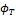
and the longitudinal incidence angle is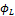
. The solar zenith angle is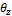
.
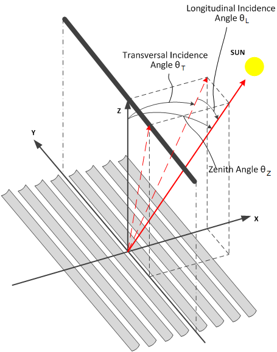
- IAM polys
The incidence angle modifier option allows you to specify optical performance of the solar field collectors using polynomial equations (up to fourth order) in both the transversal and longitudinal incidence angle directions. Refer to the Collector incidence angle table input documentation (above) for descriptions of the transversal ( ) and longitudinal ( ) collector angles.
Solar Position/Collector Incidence Angle Table#
- Import
Import a table from a text or data file. The file can contain values separated by comma, space, or tab characters, but must be formatted according to the following rules:
The first row in the file specifies the angles for the solar azimuth (for the Solar position table) or collector transversal incidence (for the Collector incidence angle table). The first entry of this row should be blank.
Each additional row specifies optical efficiency for a specific zenith angle (for the Solar position table) or longitudinal incidence angle (for the Collector incidence angle table). The first entry of the row must be the zenith or longitudinal incidence angle corresponding to the optical efficiency entries in that row.
The rows of the table should be sorted according to zenith/longitudinal incidence angle from lowest to highest.
An example tab-delimited table is as follows, where numbers in bold correspond to the solar zenith (row headers) and azimuth (column headers) angles:
-180 90 0 90 180
0 1.0 1.0 1.0 1.0 1.0
30 0.95 0.98 0.99 0.98 0.95
60 0.60 0.70 0.75 0.70 0.60
90 0.0 0.0 0.0 0.0 0.0
Note that SAM automatically sizes the table on the Collector and Receiver page to match the size of the array that is being imported.
- Export
Export the optical efficiency table on the Collector and Receiver page to a text file.
- Copy
Copy the optical efficiency table on the Collector and Receiver page to the clipboard for transfer to an optical efficiency table in another case or to other text applications.
- Paste
Paste an optical efficiency table from another SAM case or from a text file into the active case.
- Rows
Specify the number of desired rows in the table.
- Cols
Specify the number of desired columns in the table.
Incidence Angle Modifier Coefficients#
This option allows you to specify the optical performance of the collector field as functions of the transversal and longitudinal incidence angles where the performance is expressed in polynomial form.
- Transverse incidence angle modifier
The incidence angle modifier polynomial for the transversal incidence angle, as defined in the documentation for the collector incidence angle table (above). The polynomial to calculate the optical efficiency reduction associated with deviation of the irradiation incidence angle in the transversal plane is as follows:
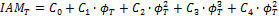
where is the transversal incidence angle.
- Longitudinal incidence angle modifier
The incidence angle modifier polynomial for the longitudinal incidence angle, as defined in the documentation for the collector incidence angle table (above). The polynomial to calculate the optical efficiency reduction associated with deviation of the irradiation incidence angle in the longitudinal plane is as follows:
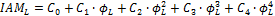
where is the longitudinal incidence angle.
Receiver Geometry and Heat Loss#
- Receiver model type
You can specify the thermal losses from the solar field receiver components using one of two approaches:
Polynomial heat loss model allows general specification of thermal losses using polynomial equations. The polynomials provide heat loss as a function of steam temperature with a correction based on wind velocity, and heat loss is evaluated at each collector module in the loop.
Evacuated tube model allows the use of a detailed evacuated tube receiver model. Select the model using the dropdown menu in this section.
Polynomial fit heat loss model#
These inputs are active for the polynomial heat loss receiver model.
- HTF temperature adjustment
This polynomial gives thermal losses in the solar field receiver component as a function of the difference between HTF temperature and ambient dry-bulb temperature in degrees Celsius. Thermal losses are evaluated at each collector module in the loop using the following expression for the coefficient of heat loss [W/m]:
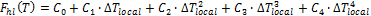
where
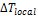
is the local (to the module) difference between the steam temperature and ambient dry bulb temperature.- Wind velocity adjustment
SAM allows you to adjust the thermal loss coefficient calculated from the Steam temperature adjustment polynomial (
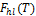
). The resulting value from the wind velocity polynomial multiplies the steam temperature heat loss polynomial, as follows: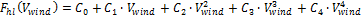
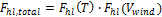
- Pressure drop at design, bar
The decrease in HTF pressure across an SCA unit under design-point operating conditions. The total pressure loss is used to calculate pumping parasitic requirements. The pressure is scaled during simulation using the Part-load pressure loss adjustment coefficients (C0-C3), which are a function of normalized mass flow rate.
- Part-load pressure loss adjustment
Polynomial coefficients describing how pressure loss varies as a function of normalized mass flow rate during simulation. The pressure loss in a single SCA is calculated as follows:
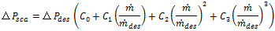
Where
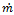
is the mass flow rate at any given time step,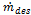
is the mass flow rate through the SCA at design, and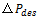
is the Pressure drop at design that you specify.- Total loop pressure loss at design
The total pressure loss through a solar field loop at design. This calculated value is equal to the design-point pressure multiplied by the Number of collector modules in a loop that you specify on the Solar Field page. The pressure loss during simulation is scaled according to the Part-load pressure loss adjustment equation.
Evacuated tube heat loss model#
These inputs are active for the evacuated tube receiver model.
- Absorber tube inner diameter (m)
Inner diameter of the receiver absorber tube, this surface in direct contact with the heat transfer fluid.
- Absorber tube outer diameter (m)
Outer diameter of the receiver absorber tube, the surface exposed to the annular vacuum.
- Glass envelope inner diameter (m)
Inner diameter of the receiver glass envelope tube, the surface exposed to the annular vacuum.
- Glass envelope outer diameter (m)
Outer diameter of the receiver glass envelope tube, the surface exposed to ambient air.
- Absorber flow plug diameter (m)
A non-zero value represents the diameter of an optional plug running axially and concentrically within the receiver absorber tube. A zero value represents a receiver with no plug. The plug allows for an increase in the receiver absorber diameter while maintaining the optimal heat transfer within the tube heat transfer fluid. For a non-zero value, be sure to use annular flow for the absorber flow pattern option.
- Internal surface roughness
The surface roughness of the inner receiver pipe surface exposed to the heat transfer fluid, used to determine flow shear force and the corresponding pressure drop across the receiver.
Surface roughness is important in determining the scale of the pressure drop throughout the system. As a general rule, the rougher the surface, the higher the pressure drop (and parasitic pumping power load). The surface roughness is a function of the material and manufacturing method used for the piping. A conservative roughness value for extruded steel pipe (the type often used for the absorber pipe) is about 3e-6 meters. The default value of 4.5e-5 m is based on this value and the absorber tube inner diameter value of 0.066 m: 3e-6 m / 6.6e-2 m = 4.5e-5.
- Absorber flow pattern (m)
Use standard tube flow when the absorber flow plug diameter is zero. Use annual flow with a non-zero absorber flow plug diameter.
- Absorber material type
The material used for the absorber tube. Choose from stainless steel or copper.
- Variant weighting fraction
The fraction of the solar field that consists of the active receiver variation. For each receiver type, the sum of the four variations should equal one. You can use the receiver variations to model a solar field with receivers in different conditions. If you want all of the receivers in the field to be identical, then you can use a single variation and assign it a variant weighting fraction of 1.
When you use more than one receiver variation, be sure that the sum of the four variant weighting fractions is 1.
Here’s an example of an application of the receiver variations for a field that consists of a two receiver types. The first type, Type 1, represents receivers originally installed in the field. Type 2 represents replacement receivers installed as a fraction of the original receivers are damaged over time.
Over the life of the project, on average, 5 percent of the Type 1 receivers have broken glass envelopes, and another 5 percent have lost vacuum in the annulus. We’ll also assume that degraded receivers are randomly distributed throughout the field – SAM does not have a mechanism for specifying specific locations of different variations of a given receiver type. To specify this situation, we would start with Type 1, and use Variation 1 to represent the 90 percent of intact receivers, assigning it a variant weighting fraction of 0.90. We’ll use Variation 2 for the 5 percent of receivers with broken glass envelopes, giving it a weighting fraction of 0.05, and Variation 3 for the other 5 percent of lost-vacuum receivers with a weighting fraction of 0.05. We’ll assign appropriate values to the parameters for each of the two damaged receiver variations.
Next, we’ll specify Type 2 to represent intact replacement receivers. We will us a single variation for the intact Type 2 receivers.
On the Solar Field page, we’ll specify the single loop configuration (assuming a loop with eight assemblies), using Type 2 for the first and second assembly in the loop, and Type 1 receivers (with the variant weighting we assigned on the Receivers page) for the remaining six assemblies in the loop
- Absorber absorptance
The ratio of radiation absorbed by the absorber to the radiation incident on the absorber.
- Absorber emittance
The energy radiated by the absorber surface as a function of the absorber’s temperature. You can either specify a table of emittance and temperature values, or specify a single value that applies at all temperatures.
- Envelope absorptance
The ratio of radiation absorbed by the envelope to the radiation incident on the envelope, or radiation that is neither transmitted through nor reflected from the envelope. Used to calculate the glass temperature. (Does not affect the amount of radiation that reaches the absorber tube.)
- Envelope emittance
The energy radiated by the envelope surface.
- Envelope transmittance
The ratio of the radiation transmitted through the glass envelope to the radiation incident on the envelope, or radiation that is neither reflected nor refracted away from the absorber tube.
- Broken glass
Option to specify that the envelope glass has been broken or removed, indicating that the absorber tube is directly exposed to the ambient air.
- Annulus gas type
Gas type present in the annulus vacuum. Choose from Hydrogen, air, or Argon.
- Annulus pressure (torr)
Absolute pressure of the gas in the annulus vacuum, in torr, where 1 torr = 133.32 Pa
- Estimated avg. heat loss (W/m)
An estimated value representing the total heat loss from the receiver under design conditions. SAM uses the value to calculate the total loop conversion efficiency and required solar field aperture area for the design point values on the Solar Field page. It does not use the value in simulation calculations.
- Bellows shadowing
An optical derate factor accounting for the fraction of radiation lost after striking the mechanical bellows at the ends of the receiver tubes.
- Dirt on receiver
An optical derate factor accounting for the fraction of radiation lost due to dirt and soiling on the receiver.
Aggregate Weighted Losses#
- Average field temp difference at design
The effective temperature for thermal loss estimates, equal to the average solar field temperature. This temperature is used to evaluate thermal losses from the solar field receivers (polynomial heat loss model only) and from piping as specified on the Parasitics page. This value is calculated as the average of the Field inlet temperature and Field outlet temperature on the Solar Field page.
- Heat loss at design
Calculated estimate of thermal losses at the Average field temp difference at design. In the case of the polynomial heat loss model, the estimate is calculated based on the difference between the average temperature and the design-point ambient temperature from the Solar Field page. In the case of the evacuated tube receiver model, the estimate is based on the user-specified Estimated avg. heat loss values on the Collector and Receiver page.
- Receiver thermal derate
Calculated value indicating the estimated thermal efficiency of the solar field receivers. This value is calculated based on the Heat loss at design calculated value, and is used only to size the solar field aperture area. Note that this value is not used in annual hourly performance calculations.
- Receiver optical derate
The reduction in optical efficiency associated with envelope transmittance and receiver soiling. This derate is calculated as a weighted sum for the four receiver variants and only applies to the evacuated receiver model option.
- Collector optical loss at normal incidence
The optical efficiency from the optical table or incident angle modifier polynomials at normal solar incidence.